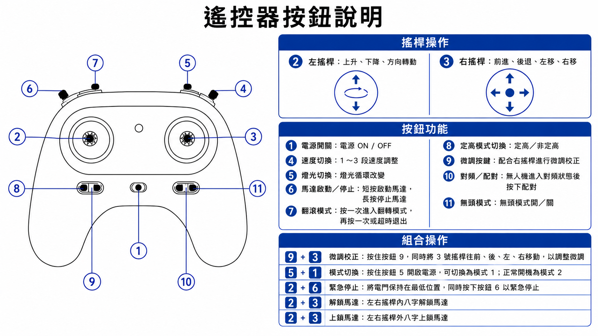

🔍 遇到問題？直接搜尋
教學影片
1. 遙控器組裝
將兩支搖桿套頭裝上遙控器。
2. 電池充電
用 USB 充電線為無人機電池充電。
3. 歸零
裝上電池、開機後，將遙控器左、右兩支搖桿都往「右下」推到底歸零。
遙控器按鈕說明

點圖片可放大檢視
搖桿操作（模式 2，正常開機預設）
| 編號 | 名稱 | 功能 |
|---|---|---|
| 2 | 左搖桿 | 上升、下降、方向轉動 |
| 3 | 右搖桿 | 前進、後退、左移、右移 |
按鈕功能
| 編號 | 名稱 | 功能 |
|---|---|---|
| 1 | 電源開關 | 電源 ON / OFF |
| 4 | 速度切換 | 1～3 段速度調整 |
| 5 | 燈光切換 | 燈光循環改變 |
| 6 | 馬達啟動／停止 | 短按啟動馬達，長按停止馬達 |
| 7 | 翻滾模式 | 按一次進入翻轉模式，再按一次或超時退出 |
| 8 | 定高模式切換 | 定高／非定高 |
| 9 | 微調按鍵 | 配合右搖桿進行微調校正 |
| 10 | 對頻／配對 | 無人機進入對頻狀態後按下配對 |
| 11 | 無頭模式 | 無頭模式開／關 |
組合操作
| 組合 | 名稱 | 說明 |
|---|---|---|
| 9 + 3 | 微調校正 | 按住按鈕 9，同時將 3 號搖桿往前、後、左、右移動，以調整微調 |
| 5 + 1 | 模式切換 | 按住按鈕 5 開啟電源，可切換為模式 1；正常開機為模式 2 |
| 2 + 6 | 緊急停止 | 將油門保持在最低位置，同時按下按鈕 6 以緊急停止 |
| 2 + 3 | 解鎖馬達 | 左右搖桿內八字解鎖馬達 |
| 2 + 3 | 上鎖馬達 | 左右搖桿外八字上鎖馬達 |
連線不上怎麼辦？
最常見：已連線，但沒有反應 → 搖桿先歸零
很多時候其實已經連線成功，只是忘了這一步：
將遙控器左、右兩支搖桿都往「右下」推到底歸零，再放開，無人機就能正常操作。（看 歸零影片）
真的連不上 → 重新對頻
如果搖桿歸零後仍無反應，請依下列步驟重新對頻：
- 將無人機上電後，中心燈會先快速閃爍。
- 將無人機放置於平坦地面，等待完成自檢，直到中心燈恆亮、尾燈持續閃爍。
- 拿起無人機輕拋至空中，使球機前後翻轉數圈，直到中心燈再次快速閃爍。
- 將無人機放回地面。
- 按下遙控器右下角的左側按鍵（10 號，對頻／配對），即可完成對頻。